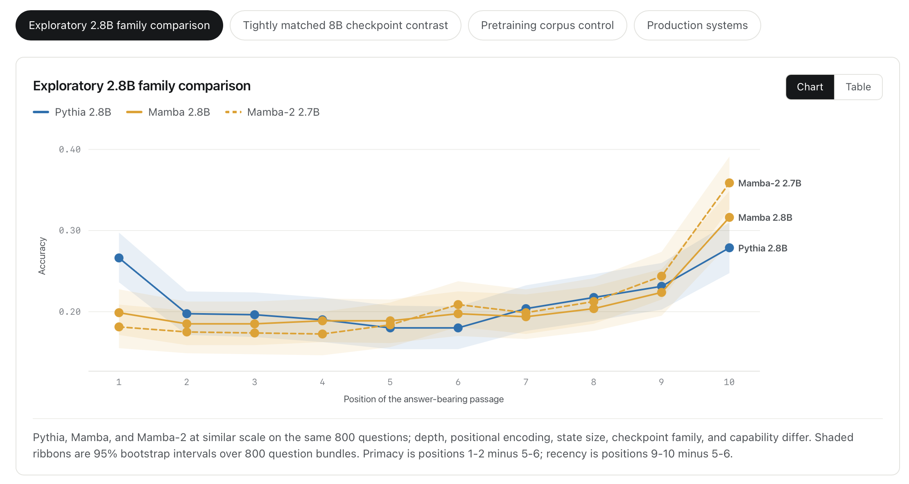

Position Bias in Mamba and Hybrid Language Models
Investigated position bias in long-context retrieval across Transformer, Mamba state-space, and hybrid architectures. Found that Transformers favor evidence near both context boundaries, while state-space models mainly favor evidence near the end. Controlled experiments showed that effective context use depends jointly on architecture, model capability, task, and prompt design.